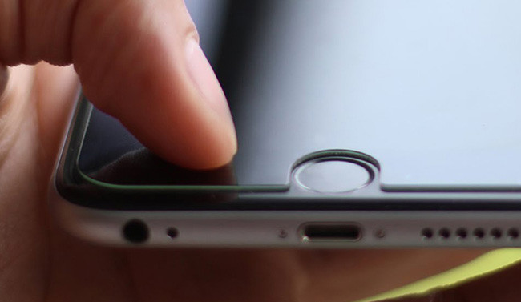
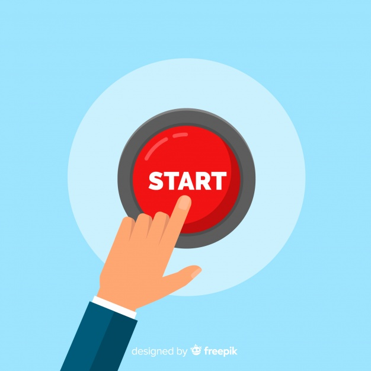

Creando un administrador para múltiples Hilos
30 de Noviembre del 2020
- El concepto de Actividades
- Creando un administrador para múltiples Hilos
- Información sobre las tareas y pila de actividades
¿Que se necesita?
Cuadro de probabilidades
| Probabilidad de que finalice | Estado del proceso | Estado de la actividad |
| Menos | Primer plano(en foco o por estar en él) | Created Started Resumed |
| Más | Segundo plano(foco perdido) | Pausado |
| Mayor | Segundo plano(no visible) | Detenido |
| Vacío | Finalizado |
El usuario espera que se conserve el estado de una actividad durante un cambio de configuración, como la rotación o el cambio al modo multiventana. Sin embargo, el sistema finaliza la actividad de forma predeterminada cuando se produce un cambio de configuración de este tipo, lo que elimina cualquier estado almacenado en la instancia de actividad.
| Un usuario espera que el estado de la IU siga siendo el mismo si cambia temporalmente de su app a una diferente y, luego, regresa a su app. |
| Cuando finaliza la actividad debido a restricciones del sistema. |
Estado de la instancia
Cómo guardar un estado de IU simple y ligero usando onSaveInstanceState()
| Método onSaveInstancestatet) para que su actividad pueda guardar la información del estado en un paquete de estado de instancia. |
| La implementación predeterminada de ese método guarda información transitoria acerca del estado de la jerarquía de vistas de la actividad. |
| Para guardar información adicional sobre el estado de la instancia de tu actividad, debes anular onsaveinstancestate 0 y agregar pares clave-valor al objeto Bundle. |
Navegación entre atividades
Es probable que una app entre en una actividad y salga de ella, muchas veces durante su ciclo de vida
Por ejemplo:
El usuario puede presionar el botón atrás del dispositivo, o la actividad puede necesitar lanzar una actividad diferente
Cómo iniciar una actividad desde otra.

StartActivity()
Cómo administrar los cambios de estado de la actividad
| El usuario toca el botón Atrás
|
| El sistema elimina el proceso de la app
|